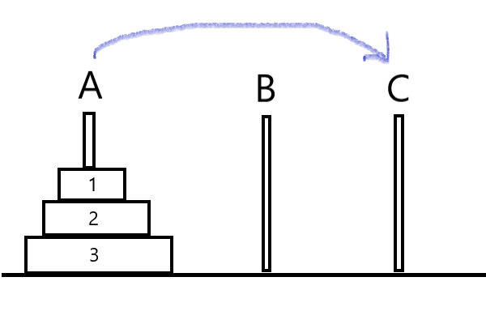

經典遞迴範例
有三根柱子分別為ABC,盤子數量不等,範例中以三個為例,所有的盤子小從到大,從上到小分別為1,2,3放在A柱,並要把所有的盤子依照原本的順序放在C柱上,盤子可以隨意移動,但不能移動到比自己小的盤子上
河內塔的程式碼非常難懂,但其實仔細看他邏輯非常簡單,我們只需要處理最上面兩個盤子,程式碼也是,我們以下逐行解說
由於我們的遞迴跑了三次,所以我們從頭開始算A B C(n=3) A C B(n=2) A B C(n=3) 盤子1是從A到C
這行就是呼應第一次的計算 把BC做交換再交換
第一次跑到這行程式碼,是n=2的情況 也就是 A C B 2從A移動到B
再第一次n=2執行到這行時,是盤子1要從C移動到B的情況, 這時候柱子為 A C B 所以我們要這樣呼叫 B(就是原本的C) A C(就是原本的B)
因為在河內塔的邏輯中,當1,2移動到B時 這時候視為一體,當程式又從頭跑一次時,邏輯等同把3移動到C 想辦法把1+2移動到C
程式邏輯
有三根柱子分別為ABC,盤子數量不等,範例中以三個為例,所有的盤子小從到大,從上到小分別為1,2,3放在A柱,並要把所有的盤子依照原本的順序放在C柱上,盤子可以隨意移動,但不能移動到比自己小的盤子上
圖示
程式解析
河內塔的程式碼非常難懂,但其實仔細看他邏輯非常簡單,我們只需要處理最上面兩個盤子,程式碼也是,我們以下逐行解說
if(n==1)printf("盤子n從A移動到C")
由於我們的遞迴跑了三次,所以我們從頭開始算A B C(n=3) A C B(n=2) A B C(n=3) 盤子1是從A到C
h(n-1,A,C,B)
這行就是呼應第一次的計算 把BC做交換再交換
printf("盤子%d從%c移到%c\n",n, A, C);
第一次跑到這行程式碼,是n=2的情況 也就是 A C B 2從A移動到B
h(n-1, B, A, C);
再第一次n=2執行到這行時,是盤子1要從C移動到B的情況, 這時候柱子為 A C B 所以我們要這樣呼叫 B(就是原本的C) A C(就是原本的B)
為什麼不用繼續往下思考了?
因為在河內塔的邏輯中,當1,2移動到B時 這時候視為一體,當程式又從頭跑一次時,邏輯等同把3移動到C 想辦法把1+2移動到C